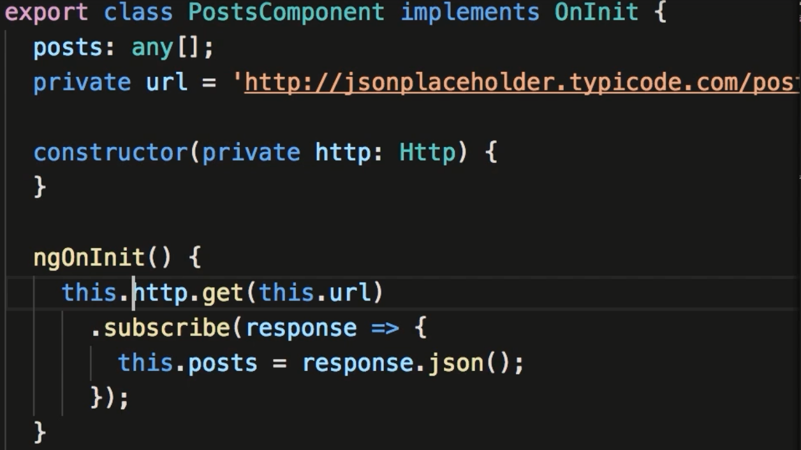
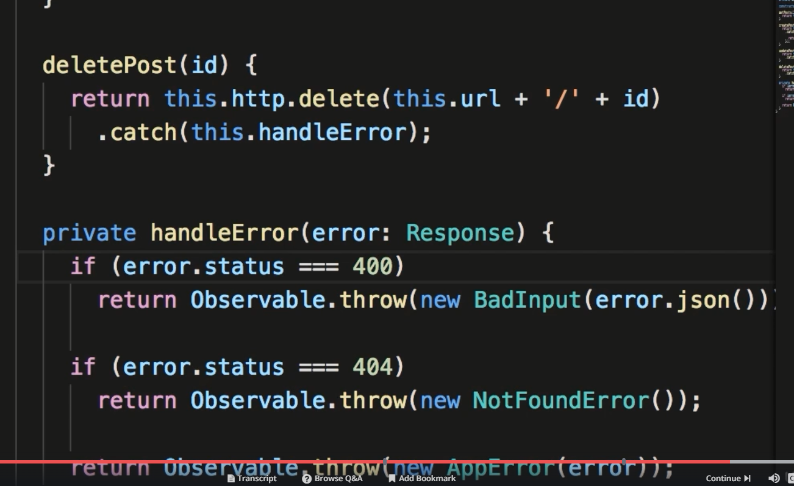
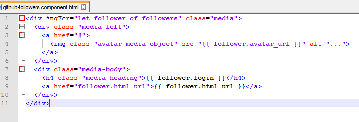

Section 9. Consuming HTTP Services
105. JSONPlaceHolder
- This lecture uses jsonplaceholder.typicode.com as an API data source.
106. Getting Data
- In order to user the Http services you need to import in the "imports:" section the HttpModule in app.module.ts (import HttpModule from '@angular/http'
- Below shows how to use the http service to retrieve data. The data comes in as an observable. You subscribe to this data.
107. Creating Data
- This is a post request. Get get the value from the keyup event. It takes the value and posts to the url. The url responds (in this case) with an id number.
- the rest of the function splices in the value in the front. (note: this example builds on section 106.)
108. Updating Data
- When updating a record you could use either verb put or patch. Put is for modifying the entire record, patch is for partial updates.
- Patch isn't used as commonly as put.
- Below added a button with an updatePost method. This button sends back the individual post.
- Here, it demonstrates both the patch and put method. (note: cutoff isRead: true in curly braces) . Also, this is a demo, there isn't a isRead Property
109. Deleting Data
- This just uses a different verb. Have to reference the individual post item
- Instead of using updatePost from above we replace with deletePost(post)
110. OnInit Interface
- Angular has lifecycle hooks for the life of a component. It has methods for each of these events.
- There are many lifecycle hook methods.(see below). The name of the method always has an ng prefix. (ie:OnInit has the method ngOnInit)
- You should not put code in your constructor as a rule. If your component requires data at start up use ngOnInit()

111. Separation of Concerns
- The current examples are violating the Separation of Concerns principal. a course do only one thing. Components generally should be used to present the view.
- In the examples below this component is also getting the data. This should be moved into a service.
112. Extracting a Service
- To move the data retrieval into a service you need to create a service. With the cli type ng g s yourservice. Note: you have to manually add this service to app.module.ts [providers] section.
- A best practise is to create a services folder and move your newly created service there.
- Below shows how to implement the service and utilize in the component.

113. Handling Errors
- There are 2 types of errors; Unexpected and Expected. Unexpected types are : server offline, network is down, unhandled exceptions.
- Expected types are, not found(404) and Bad Request(400)
114. Handling Unexpected Errors
- These types of errors can be handled in the observable, the second parameter is where errors are handled.
115. Handling Expected Errors
- With expected errors you can check the status of the error parameter.
116. throwing Application-specific Errors
- The whole gist of this topic is that we don't want to use the catch method that the http service throws since the only way
to handle this error is in the component and we want separate this. the trick is we want to mimick what the http service throws
when it gets an error and this is an Observable. We first need to catch the http Observable (that is why we import the catch libarary)
and then we want to create our own error handling classes that our outside the component. To behave properly though we need to import
the Observable library so that we can return an Observable after we've caught it since that is what the http service would do (ie: return an Observable).
We do a check of the error
- A problem with the above implementation is we are handing errors in the component. this should be moved into a separate error handler.
- You can do this by importing the catch and observable service in our post service, as follows:(in our services file)
- Below, you are simply creating a class that you will test for below. The test uses instanceOf to see if there is an instance of this Class.(new file app-error.ts)
- Below is the Service where we throw an Observable New AppError with the error as a parameter. (In services file)
- Below is where we see if the error is of the type Not found. See how it extends AppError.
- Here our error method is of type AppError (above) and we check to see if its of type NotFoundError, if not it is an unexpected error.
- At the end of this I imagine these error Classes are going to send data somewhere.
117. Handling Bad Request Errors
- Same as above except this deals with a type 400 error.
118. Importing Observable Operators and Factory Methods
- You may get an Observable throw error (type 404) object not found. To catch you need to import the throw method from observable
- Lesson here is when dealing with observables always import catch and throw.
119. Global Error Handling
- To implement a global handler that you can use in all your components you should create a separate component
- that implements the ErrorHandler Component. You can see an example at https://angular.io/api/core/ErrorHandler
- Below is the default structure for implementing ErrorHandler

- You need to import this class in app.module.ts. However, you can override the default behavior for Angular by using the syntax below
- This is telling Angular to substitute AppErrorHandler for the default ErrorHandler
- To have the error propagate through your component you need to remove the error handling in ngOnInit

- You can then substitute this new class by throwing error again (See Below).
120. Extracting a Reusable Error Handling Method
- In this example you can create a private method that handles the 400 and 404 errors. The example simply pulls out the if statments and puts a reference to this method.

121. Extracting a Reusable Data Service
- This topic deals with creating a generic Data Service that simply generically does our connecting to the API end point.
You then can extend this service and use it more specifically to the specific service.
- Below is the generic class
- Below extends this class and customizes to this specific Service.
- Now that we've created a generic dataService we need to modify the calling methods to the ones named above in our calling component.
122. The Map Operator
- Requires to be imported /rxjs/add/operator/map
- Its a way of avoiding using .json() in the response. I'm not sure this matters with the new HttpClientModule.
123. Optimistic vs. Pessimistic Updates
- So far we've been using pessimistic updating. This waits for a response from the server and only makes changes if we get a successful
response. To make this Optimistic you would do your GUI updates before getting a response from the server. If you
get an error you have to reverse what ever it was that you change before the API call. It appears quicker because the gui is updated instantly.
124. Observables vs. Promises
- Observables are "lazy" they don't do anything until you subscribe... Promises are eager and would implement immediately.
- Observables have a lot more powerful operators that you can use.
- Bottom line, stick with Observables.
Assignment 8. GitHub Followers Page
- This assignment makes an https request to the github api https://api/github.com/users/mosh-hamedani/followers.
this will provide a json list followers. Take this list and render a page. I'm assuming that it would be best to
separate the service from the component.
- Note: Lab result is commented out.... didn't want to hit github everytime I saved this doc.
- Below is the source for the instructors solution.
